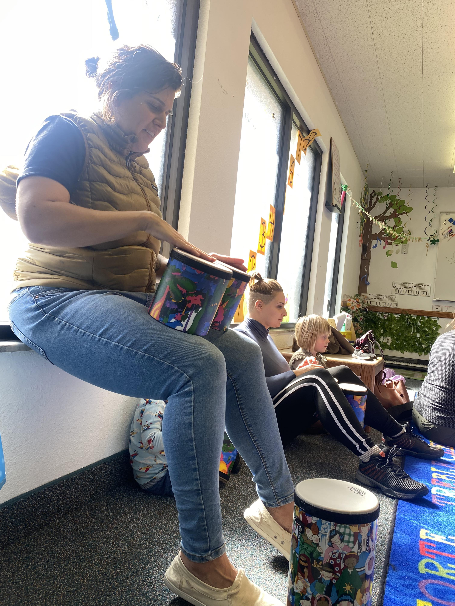
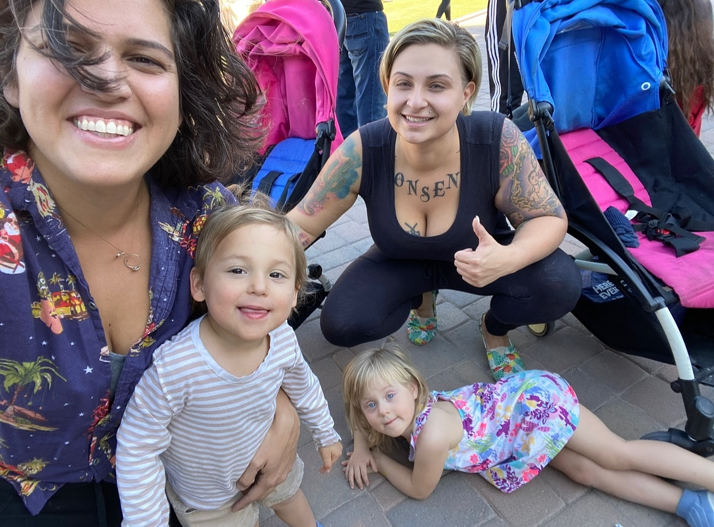

Navigating the chaotic dance floor of parenting twin toddlers while proudly flaunting my queer mom cape has become a comical yet rewarding challenge. Amidst the diaper changes, sippy cup negotiations, and the occasional toddler tantrum duet, I've discovered my secret weapon against stress – the magical power of silly and short dance sessions.

Picture this: twirling around the living room with one toddler clinging to each leg, giggles echoing like a symphony of joy. It's a dance of laughter and wiggles, a therapeutic routine where our collective funky moves transcend the mundane chaos of toddlerhood.
 As the beats of parenting play on, I've mastered the art of finding joy in the rhythm of my queer mom life – one dance move at a time. After all, who needs a choreographed routine when you've got toddler dance partners and a sprinkle of parental pizzazz?